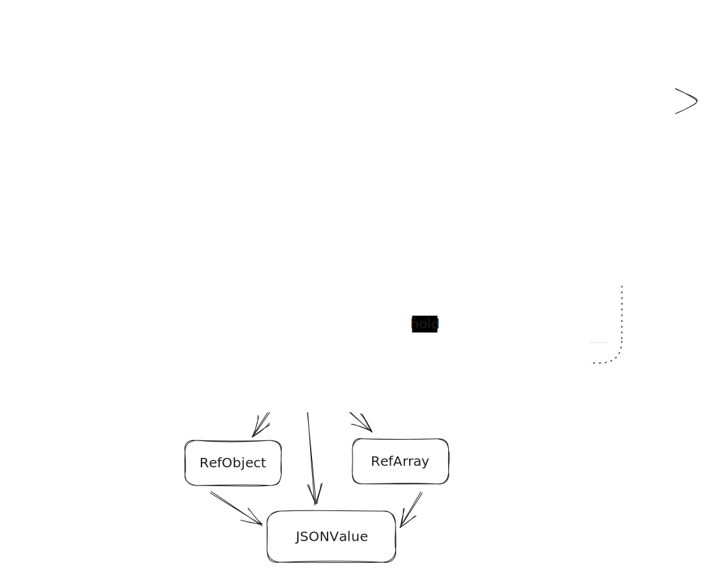

sequenceDiagram
actor User
User->>JSONEncoder: encode Encodable
JSONEncoder->>JSONEncoderImpl: wrap Encodable
JSONEncoderImpl->>Encodable: encode to Self
Encodable->>JSONEncoderImpl: ask for Container
JSONEncoderImpl->>Encodable: generate and return Container
loop for each field
Encodable->>Container: ask for nested Container
Container->>JSONFuture: generate nested JSONFuture object
JSONFuture->>Container: return nested JSONFuture object
Container->>Encodable: generate and return nested Container
Encodable->>Container: call encode passing field name and value
Container->>JSONFuture: append value
end
JSONEncoderImpl->>JSONFuture: get value
JSONFuture->>JSONEncoderImpl: return JSONValue
JSONEncoderImpl->>JSONEncoder: JSONValue
JSONEncoder->>User: Data
Introduction
Brief Summary
In this set of articles, we take a close look at Swift programming. We’re focusing on creating a package called “MFEncoder” to handle multipart form data. This is important for things like sending forms and files over the internet. We will use the OpenAI GPT-4 chatbot as a guide or mentor to help us through the project.
Previous Parts
In Part 1 we discussed the details of Multipart form encoding. We also built some foundational elements as well as interactive Playground to help us with testing our implementation with the real backend.
In Part 2 we implemented MFFormData - a low-level API, inspired by the Web’s FormData API, that gives complete control over the form data before submitting it over HTTP.
Part three
We will tell about implementing MFEncoder - A high-level API that conforms to Swift’s Encoder protocol. Perfect for converting your Swift models into multipart form data without hassle.
About Encoder and Encodable protocols
Why do we need to implement MFEncoder, isn’t MFFormData enough?
The Encoder and Encodable protocols in Swift are designed in a declarative manner. This focus allows us to specify what needs to be done, rather than detailing how to do it. By defining what properties our data structure has and marking it as Encodable, the compiler and runtime take care of the rest. This design offers several advantages:
Simplifies Our Code
Because we’re only declaring what to encode, we don’t need to write imperative code to convert each property to a transportable data format. The Encoder itself knows how to take our declaratively defined structure and serialize it, significantly simplifying our codebase.
Encourages Consistency
A declarative approach encourages a consistent method of data encoding and decoding across our entire project or even across multiple projects. Every type that conforms to Encodable can be serialized in the same way, using the same Encoder types.
Enhances Maintainability
Since our code is not concerned with the ‘how,’ it becomes easier to maintain. If Swift or its libraries update the underlying encoding mechanisms, our Encodable types should continue to work without modification.
Enables Abstraction
The Encoder protocol abstracts the details of the encoding storage and format. Because these details are abstracted away, we can switch between different encoding formats (like JSON, Plist’s, Multipart Form etc.) without having to change the model classes/structures themselves.
Facilitates Extensibility
Swift’s Encodable protocol makes it straightforward to add encoding capabilities to existing types through extensions. If we have a type that we wish to encode but don’t control its source code, we can extend it to conform to Encodable, assuming its properties are also Encodable.
Example
struct Book: Encodable {
let title: String
let author: String
let publishDate: Date
}
let ourBook = Book(title: "1984", author: "George Orwell", publishDate: Date())In this example, just by declaring Book as Encodable, we’ve established that a book can be encoded to any format supported by an Encoder. We don’t need to specify how this encoding happens; it’s all managed by the protocol and the specific Encoder instance we choose to use (like JSONEncoder). This is the essence of declarative programming.
Approaching implementation
Implementing a custom encoder is an advanced task that requires a good understanding of the encoding process and how Swift handles different types of data. GPT-4 provides us with a very high level skeleton and advises to look into JSONEncoder implementation which can be found in the Swift project on GitHub
Here’s what GPT-4 gave us an example of how we might start implementing a custom encoder. This example doesn’t fully implement an encoder, but it does show the structure we’d need to follow.
public struct CustomEncoder: Encoder {
public var codingPath: [CodingKey] = []
public var userInfo: [CodingUserInfoKey: Any] = [:]
public func container<Key>(keyedBy type: Key.Type) -> KeyedEncodingContainer<Key> where Key: CodingKey {
let container = CustomKeyedEncodingContainer<Key>(codingPath: codingPath, userInfo: userInfo)
return KeyedEncodingContainer(container)
}
public func unkeyedContainer() -> UnkeyedEncodingContainer {
CustomUnkeyedEncodingContainer(codingPath: codingPath, userInfo: userInfo)
}
public func singleValueContainer() -> SingleValueEncodingContainer {
CustomSingleValueEncodingContainer(codingPath: codingPath, userInfo: userInfo)
}
}Notice how Encoder doesn’t even require the encode method. CustomKeyedEncodingContainer, CustomUnkeyedEncodingContainer, and CustomSingleValueEncodingContainer are placeholder types and we need to implement these types to properly handle the encoding.
Each of these methods is part of the Encoder protocol and is used when encoding different types of data. The actual work of encoding the data will be performed by the CustomKeyedEncodingContainer, CustomUnkeyedEncodingContainer, and CustomSingleValueEncodingContainer types.
Learning from JSONEncoder source code
Lets follow the advice and try to figure out some details of encoding in Swift by looking at JSONEncoder implementation
We will describe central entities, their roles, relationships and some of their methods. We will also provide a sequence chart of encoding process.
JSONValue
Fundamental data structure that is used to represent full JSON payload within Swift types system. Its a recursive polymorphic enum, containing 4 basic JSON types:
- string
- number
- boolean
- null
as well as 2 container types:
- list, represented as an array of JSONValues
- object, represented as a dictionary
[String: JSONValue]
JSONValue is what gets assembled as a result of all encoding operations. Having a top-level JSONValue takes a trivial recursive operation to produce the wanted JSON string.
JSONFuture
Wraps JSONValue making possible to reference its nested containers and update them during serialization on all levels. To achieve this JSONFuture holds reference based wrappers around primitive array and dictionary.
private enum JSONFuture {
case value(JSONValue)
case nestedArray(RefArray)
case nestedObject(RefObject)
class RefArray {
private(set) var array: [JSONFuture] = []
// ... multiple mutate methods omitted ...
}
class RefObject {
private(set) var dict: [String: JSONFuture] = [:]
// ... multiple mutate methods omitted ...
}
}When serializing complex, nested structures like JSON objects — which can include other objects, or arrays containing additional arrays — we encounter a specific challenge related to Swift’s value semantics. In a nested structure, any modification to a deep-level object would only affect a copy of that object, leaving the overall parent structure unchanged. This limitation makes a basic JSONValue approach insufficient for our purposes, prompting the need for reference types like RefArray and RefObject during the encoding process.
Both RefArray and RefObject have the capability to create each other, nesting new reference containers within themselves. Additionally, they offer value getters that output them as plain dictionaries or arrays containing JSONValues. These getters enable the recursive assembly of the complete payload into a JSONValue tree, which is essential for the final serialization step.
These reference wrappers are used by Keyed and Unkeyed under the hood.
Keyed, Unkeyed and Single value containers
Containers do the actual encoding work. Each includes multiple overloaded encode methods to deal with all possible primitive values in Swift as well as any user types corresponding to Encodable protocol. Each wraps its kind of container:
- JSONFuture.RefObject for Keyed
- JSONFuture.RefArray for Unkeyed
- JSONValue for SingleValue
Keyed and Unkeyed can create and return nested containers, building the tree of JSONFuture polymorphic entities.
JSONEncoderImpl
Implements Encoder protocol, holding the root (or sub root) node as one of 3 possible JSONFuture values from above. Implements container generation methods to comply to protocol. Holds current path which can be accessed by user encode methods.
Each container holds reference to its parent encoder implementation.
_SpecialTreatmentEncoder
Is internal protocol that is used like kind of Template Class for both JSONEncoderImpl and all Container classes. It holds default implementation for several convenient methods used by both Encoder and Containers.
- wrapDate - uses DateEncodingStrategy to provide different convenient methods for date encoding
- similar wrappers for Data and Object (Dictionary)
- wrapEncodable<E: Encodable> - is the central encoding dispatch. For complex Swift objects like
Date,Data,Dictit calls internal wrapping methods. For user types, it generates a new JSONEncoderImpl instance and initiates a recursive encoding. It produces JSONValue for final serialization.
This is the relationship scheme of described objects. 
JSONEncoder
The main class is a Facade form JSONEncoderImpl, that stores the options, like dateEncodingStrategy or field name conversion strategy etc. It provides main top level entrypoint - encode method:
open func encode<T: Encodable>(_ value: T) throws -> Data {
let encoder = JSONEncoderImpl(options: self.options, codingPath: [])
let value: JSONValue = try encoder.wrapEncodable(value, for: nil)
let writer = JSONValue.Writer(options: self.outputFormatting)
let bytes = writer.writeValue(value)
return Data(bytes)
}Encoding process example
Here is an example of advanced Encoder usage in client code
struct ContactInfo: Encodable {
var firstName: String = "John"
var lastName: String = "Smith"
var homePhone: String = "11 222 3333"
var cellularPhone: String = "+11 222 333 444"
var email: String = "john@email.com"
let website: String = "https://example.com"
let linkedIn: String = "https://linkedin.com/john"
let github: String = "https://github.com/john"
func encode(to encoder: Encoder) throws {
var contact = encoder.container(keyedBy: ContactInfoKeys.self)
try contact.encode("\(firstName) \(lastName)", forKey: .name)
try contact.encode(email, forKey: .email)
var phones = contact.nestedUnkeyedContainer(forKey: .phones)
try phones.encode(homePhone)
try phones.encode(cellularPhone)
var sites = contact.nestedContainer(keyedBy: SitesKeys.self, forKey: .sites)
print("Contact Info coding path: \(encoder.codingPath)")
print("Sites coding path: \(sites.codingPath)")
try sites.encode(website, forKey: .personal)
try sites.encode(linkedIn, forKey: .linkedIn)
try sites.encode(github, forKey: .github)
}
}
let encoder = JSONEncoder()
encoder.outputFormatting = [.prettyPrinted, .withoutEscapingSlashes, .sortedKeys]
let data = try encoder.encode(ContactInfo())In this example, we have a ContactInfo struct that conforms to the Encodable protocol.
Custom Encoding Logic
Instead of relying on the default behavior of the Encodable protocol, we implement the encode(to:) method to manually dictate how the data should be serialized into JSON.
Here are the key points:
Combining Fields: The
firstNameandlastNameare combined and encoded as a single JSON key-value pair with the key “name”.Nested Unkeyed Container for Phones: Both
homePhoneandcellularPhoneare packed into an unkeyed container (essentially an array) under the key “phones”.Nested Keyed Container for Sites: The various website URLs (
website,linkedIn,github) are grouped into a nested keyed container under the key “sites”.Debugging with Coding Paths: The coding path of each nested container is printed, helping us to debug or understand the hierarchy of our encoding.
Encoder Configuration
We use a JSONEncoder to serialize our ContactInfo object into JSON format. The encoder is configured to produce pretty-printed JSON, without escaping slashes, and with sorted keys.
Encoding process sequence
Now lets look at the sequence chart of this process
For each nested user type encountered during serialization a new subprocess starts with wrapEncodable method.
Utilizing a customized encode method within the ContactInfo struct provides us with greater insights into the encoding mechanics. By default, when we conform a struct to the Encodable protocol, Swift automatically synthesizes standard encode methods through internal reflection. This custom approach allows us to observe and control the process more closely.
Now that we know all the necessary details, implementing MFEncoder will be quite straightforward. In the last part we will discuss some minor details of our implementation which are specific for multipart/form-data as well as show our approach to testing those with Playgrounds.

Artem Putilov, 2023